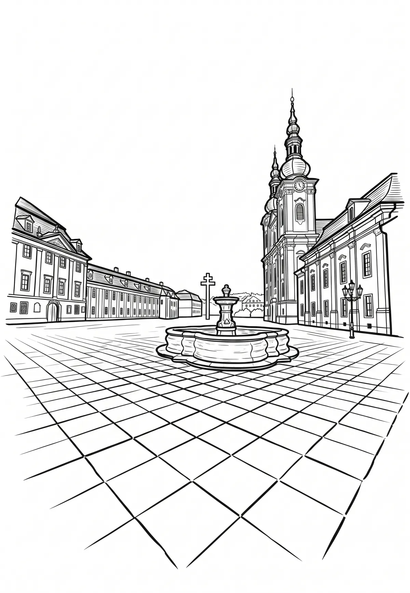

Poutní místo Velehrad
Zlínský kraj · 198 m n. m.

historická památka · #051
Velehrad je obec v okrese Uherské Hradiště ve Zlínském kraji. Leží šest kilometrů severozápadně od Uherského Hradiště. Žije zde přibližně 1 100 obyvatel a nachází se zde jedno z nejvýznamnějších poutních míst České republiky. V lidové tradici je ztotožňován s hlavním střediskem Velké Moravy, Veligradem.